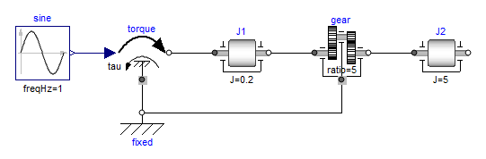
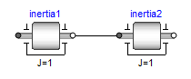
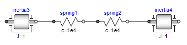

OverviewOverview |
|
Information
This information is part of the Modelica Standard Library maintained by the Modelica Association.
This package contains components to model 1-dimensional rotational mechanical systems, including different types of gearboxes, shafts with inertia, external torques, spring/damper elements, frictional elements, backlash, elements to measure angle, angular velocity, angular acceleration and the cut-torque of a flange. In sublibrary Examples several examples are present to demonstrate the usage of the elements. Just open the corresponding example model and simulate the model according to the provided description.
A unique feature of this library is the component-oriented modeling of Coulomb friction elements, such as friction in bearings, clutches, brakes, and gear efficiency. Even (dynamically) coupled friction elements, e.g., as in automatic gearboxes, can be handled without introducing stiffness which leads to fast simulations. The underlying theory is new and is based on the solution of mixed continuous/discrete systems of equations, i.e., equations where the unknowns are of type Real, Integer or Boolean. Provided appropriate numerical algorithms for the solution of such types of systems are available in the simulation tool, the simulation of (dynamically) coupled friction elements of this library is efficient and reliable.

A simple example of the usage of this library is given in the
figure above. This drive consists of a shaft with inertia J1=0.2 which
is connected via an ideal gearbox with gear ratio=5 to a second shaft
with inertia J2=5. The left shaft is driven via an external,
sinusoidal torque.
The filled and non-filled grey squares at the left and
right side of a component represent mechanical flanges.
Drawing a line between such squares means that the corresponding
flanges are rigidly attached to each other.
By convention in this library, the connector characterized as a
filled grey square is called flange_a and placed at the
left side of the component in the "design view" and the connector
characterized as a non-filled grey square is called flange_b
and placed at the right side of the component in the "design view".
The two connectors are completely identical, with the only
exception that the graphical layout is a little bit different in order
to distinguish them for easier access of the connector variables.
For example, J1.flange_a.tau is the cut-torque in the connector
flange_a of component J1.
The components of this library can be connected together in an arbitrary way. E.g., it is possible to connect two springs or two shafts with inertia directly together, see figure below.

